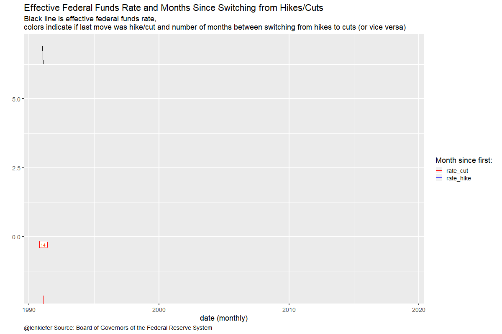

Last week I gave a speech in Cincinnati, Ohio at the UC/PNC Economic Outlook program. My speech was titled “Forecasting in a Vulnerable Economy”. You can find slides and detailed notes over on LinkedIn: https://www.linkedin.com/pulse/forecasting-vulnerable-economy-leonard-kiefer/.
In this post I want to share R code for the first three plots on the Vulnerable Economy.
We’ll get the data via the St Louis Fed’s FRED. We’re going to grab the Fed Funds rate FEDFUNDS, the Unemployment Rate UNRATE the Congressional Budget Office’s estimate of the long-run natural rate of unemployment NROU and the spread between the 10-year and 2-year U.S. Treasury T10Y2Y. All but the last two are monthly data. The NROU variable is quarterly, so we’ll fill down to make it monthly, while the T10Y2Y is daily, so we’ll pull it down withe a separate call to tidyquant::get.
Click for R code to wrangle data
# load libraries
library(tidyverse)
library(sqldf)
library(lubridate)
# load data ----
df <- tidyquant::tq_get(c("FEDFUNDS","UNRATE","NROU"),
get="economic.data",
from="1960-01-01")
# spread out data and fill down
df2 <- spread(df, symbol,price)
df2 <-
df2 %>%
mutate(NROU2=zoo::na.locf(NROU,na.rm=F)) %>%
mutate(UGAP2 = UNRATE-NROU2,
dff=c(NA,diff(FEDFUNDS)),
up=ifelse(UNRATE>NROU2, UNRATE,NROU2),
down=ifelse(UNRATE<NROU2, UNRATE,NROU2),
id=row_number(),
dc=lead(date))
df_slope <- tidyquant::tq_get("T10Y2Y",
get="economic.data",
from="1960-01-01") %>%
mutate( up=ifelse(price>0, price,0),
down=ifelse(price<0, price,0))
# recession data frame based on NBER dates
recessions.df = read.table(textConnection(
"Peak, Trough
1960-04-01, 1961-02-01
1969-12-01, 1970-11-01
1973-11-01, 1975-03-01
1980-01-01, 1980-07-01
1981-07-01, 1982-11-01
1990-07-01, 1991-03-01
2001-03-01, 2001-11-01
2007-12-01, 2009-06-01"), sep=',',
colClasses=c('Date', 'Date'), header=TRUE)
# spread out data and fill down
df2 <- spread(df, symbol,price)
df2 <-
df2 %>%
mutate(NROU2=zoo::na.locf(NROU,na.rm=F)) %>%
mutate(UGAP2 = UNRATE-NROU2,
dff=c(NA,diff(FEDFUNDS)),
up=ifelse(UNRATE>NROU2, UNRATE,NROU2),
down=ifelse(UNRATE<NROU2, UNRATE,NROU2),
id=row_number(),
dc=lead(date))Yield curve slope chart
This one is pretty simple:
#slope chart ----
ggplot(data=filter(df_slope,!is.na(price)), aes(x=date,y=price))+
geom_rect(data=filter(recessions.df,year(Peak)>1976), inherit.aes=F,
aes(xmin=Peak, xmax=Trough, ymin=-Inf, ymax=+Inf), fill='darkgray', alpha=0.5) +
geom_line(color="black")+
geom_ribbon(aes(ymin=0,ymax=down),fill="#d73027",alpha=0.5)+
geom_ribbon(aes(ymin=0,ymax=up),fill="#4575b4",alpha=0.5) +
theme_minimal(base_size=8)+
theme(legend.position="top",
plot.caption=element_text(hjust=0),
plot.subtitle=element_text(face="italic"),
plot.title=element_text(size=16,face="bold"))+
labs(x="",y="",
caption="@lenkiefer Source: Federal Reserve (H.15), sahded area NBER recessions.\nretrieve from FRED, Federal Reserve Bank of St Louis, Feb 25, 2019",
title="Slope of Yield Curve:\n10-year minus 2-year Constant Maturity Treasuy Yields",
subtitle="Difference in percentage points, daily")+
geom_rug(aes(color=ifelse(price<=0 ,"<=0 ",">0")),sides="b")+
scale_color_manual(values=c("#d73027","#4575b4"),name="Slope: ")
Unemployment Rate Chart
#ugap chart----
ggplot(data=filter(df2,!is.na(NROU2)),aes(x=date,y=UNRATE))+
geom_rect(data=recessions.df, inherit.aes=F, aes(xmin=Peak, xmax=Trough, ymin=-Inf, ymax=+Inf), fill='darkgray', alpha=0.5) +
geom_line(color="black")+
geom_line(linetype=2,aes(y=NROU2))+
geom_ribbon(aes(ymin=UNRATE,ymax=down),fill="#d73027",alpha=0.5)+
geom_ribbon(aes(ymin=UNRATE,ymax=up),fill="#4575b4",alpha=0.5) +
scale_x_date(date_breaks="5 years",date_labels="%Y")+
scale_y_continuous(sec.axis=dup_axis())+
theme_minimal(base_size=8)+
theme(legend.position="top",
plot.caption=element_text(hjust=0),
plot.subtitle=element_text(face="italic"),
plot.title=element_text(size=16,face="bold"))+
labs(x="",y="Percent",
title="U.S. Unemployment Rate vs Natural Rate of Unemployment",
subtitle="Solid line Unemployment Rate, dotted line Long-term Natural Rate of Unemployment",
caption="@lenkiefer Data Source: U.S. Bureau of Labor Statistics, U.S. Congressional Budget Office,shaded bars NBER Recessions\nNatural Rate of Unemployment (Long-Term) retrieved from FRED,\nFederal Reserve Bank of St. Louis; https://fred.stlouisfed.org/series/NROU, Feb 25, 2019")+
geom_rug(aes(color=ifelse(UNRATE<=NROU2,"Below or Equal","Above")),sides="b")+
scale_color_manual(values=c("#d73027","#4575b4"),name="Unemployment Rate Above/Below Natural Rate ")
Fed Funds Chart
This chart is new for me. For this chart I wanted to count how many months between the Fed hiking rates and the next cut (or vice versa). You can get a list of historical monetary policy announcments and open market operations here https://www.federalreserve.gov/monetarypolicy/openmarket.htm. By inspecting the data I was able to identify the periods when the FOMC shifted from cutting rates to hike (or vice versa).
# fedfunds chart ----
df7 <-
data.frame(
date2=as.Date(
# date when policy changed
c("1993-02-04",
"1995-07-06",
"1997-03-25",
"1998-09-29",
"1999-06-30",
"2001-01-03",
"2004-06-30",
"2007-09-18",
"2015-12-17",
"2025-01-01") # last date is a placeholder
),
dlag=as.Date(
# date of prior policy
c("1990-01-01", # first date is a placeholder
"1993-02-04",
"1995-07-06",
"1997-03-25",
"1998-09-29",
"1999-06-30",
"2001-01-03",
"2004-06-30",
"2007-09-18",
"2015-12-17")
)
) %>%
mutate(id2=row_number(),
type=ifelse(id2 %% 2 ==1, "rate_cut","rate_hike"))
knitr::kable(df7)| date2 | dlag | id2 | type |
|---|---|---|---|
| 1993-02-04 | 1990-01-01 | 1 | rate_cut |
| 1995-07-06 | 1993-02-04 | 2 | rate_hike |
| 1997-03-25 | 1995-07-06 | 3 | rate_cut |
| 1998-09-29 | 1997-03-25 | 4 | rate_hike |
| 1999-06-30 | 1998-09-29 | 5 | rate_cut |
| 2001-01-03 | 1999-06-30 | 6 | rate_hike |
| 2004-06-30 | 2001-01-03 | 7 | rate_cut |
| 2007-09-18 | 2004-06-30 | 8 | rate_hike |
| 2015-12-17 | 2007-09-18 | 9 | rate_cut |
| 2025-01-01 | 2015-12-17 | 10 | rate_hike |
This table shows that prior to the most recent hiking cycle, which began on December 12, 2015 rates had been cut (or held constant) from September 18, 2007.
Now, let’s use sqldf and some SQL to merge back on the Fed policy action dates to our full data and then make a plot.
output <- sqldf("select * from df2 left join df7
on (df2.date>=df7.dlag and df2.date<=df7.date2)") %>%
filter(!is.na(dlag)|year(date)>2015) %>%
mutate(dur=interval(dlag,date) %/% months(1)+1)
g1<-
ggplot(filter(output, year(date)>1990), aes(x=date,y=ifelse(type=="rate_cut",-dur, dur)/50, color=type, group=date2))+
geom_line()+
geom_rug(sides="b")+
geom_label(data=output %>% group_by(type,date2) %>% summarize(date=max(date),dur=max(dur),FEDFUNDS=last(FEDFUNDS)),aes(label=dur),show.legend=FALSE)+
geom_line(aes(x=date,y=FEDFUNDS),inherit.aes=FALSE)+
theme_gray(base_size=16) +
scale_color_manual(values=c("red","blue"), name="Month since first: ")+
theme(plot.caption=element_text(hjust=0),
plot.subtitle=element_text(size=rel(0.8),face="italic"))+
labs(x="date (monthly)", y="",
title="Effective Federal Funds Rate and \nMonths Since Switching from Hikes/Cuts",
subtitle="Black line is effective federal funds rate,\ncolors indicate if last move was hike/cut and \nnumber of months between switching from hikes to cuts (or vice versa)",
caption="@lenkiefer Source: Board of Governors of the Federal Reserve System")
g1
And if we want to animate with gganimate we need to make a slight tweak (for labels)
g2<-
ggplot(filter(output, year(date)>1990), aes(x=date,y=ifelse(type=="rate_cut",-dur, dur)/50, color=type, group=date2))+
geom_line()+
geom_rug(sides="b")+
geom_label(aes(label=dur),show.legend=FALSE)+
geom_line(aes(x=date,y=FEDFUNDS),inherit.aes=FALSE)+
theme_gray(base_size=16) +
scale_color_manual(values=c("red","blue"), name="Month since first: ")+
theme(plot.caption=element_text(hjust=0),
plot.subtitle=element_text(size=rel(0.8),face="italic"))+
labs(x="date (monthly)", y="",
title="Effective Federal Funds Rate and \nMonths Since Switching from Hikes/Cuts",
subtitle="Black line is effective federal funds rate,\ncolors indicate if last move was hike/cut and \nnumber of months between switching from hikes to cuts (or vice versa)",
caption="@lenkiefer Source: Board of Governors of the Federal Reserve System")
library(gganimate)
anim_save(file="fed_cuts.gif",
animation = animate(g2+gganimate::transition_reveal(date),height=800,width=1200,end_pause=25,nframes=180))